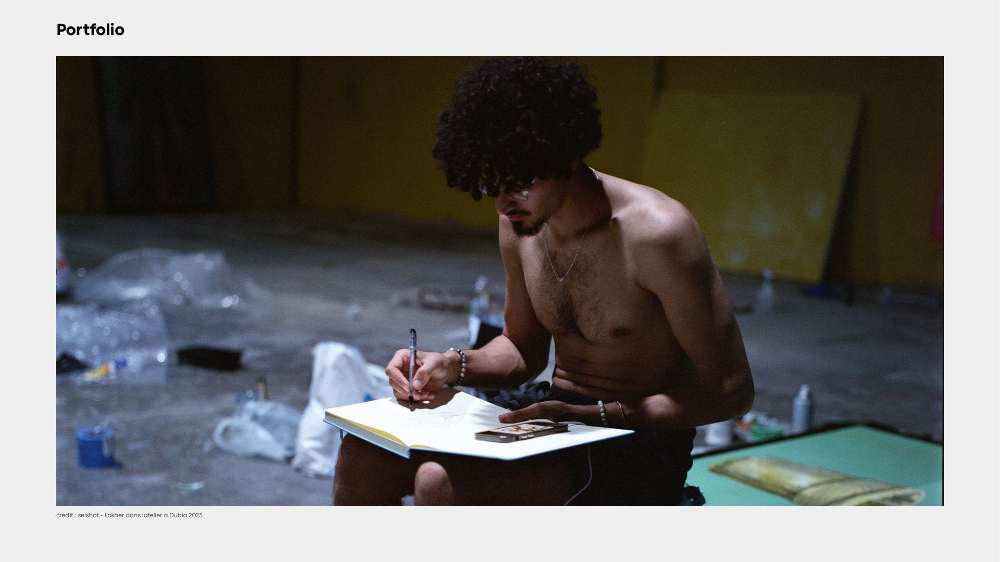

About
Lokher is an Algerian painter who graduated from the Higher School of Fine Arts of Algiers. His practice is rooted in a sensitive exploration where gaze, body, and movement play a central role. Rather than representing the world as it is, he is interested in how it is perceived, traversed, and sometimes displaced. His works often emerge from a careful attention to details, deviations, and the zones of tension between the visible and the imaginary.
Lokher's work is built through a direct relationship with space. Movement becomes a tool for reflection, and walking a means to observe forms, colors, and perspectives differently. This approach gives rise to a fragmented pictorial universe, where images function as layers of thought, attempts to capture inner states in constant transformation. Rejecting linear reading, he develops an aesthetic that embraces ambiguity, intuition, and the viewer's sensory experience.
His journey has led him to present his work on several international stages. In 2023, he exhibited with Inloco Gallery in Dubai, followed in 2024 by Marrakech with BCK Gallery, in collaboration with Les Créatifs Africains. That same year, he participated in the 2024 Design Biennale, presenting at the Embassy of Belgium and the Dojo Algiers, and took part in the international artistic residency IFCA. In 2025, Lokher held a solo exhibition at XBM, an important milestone affirming the coherence of his pictorial universe and his position within the contemporary scene.
Salah Badis: "For Lokher, childhood is not a lost country. Rather, it is a collection of gestures and movements in space; it is a kind of geometric forms and invisible places that exist everywhere, and he sees them. Like in Alice in Wonderland, for Lokher too, there is always a 'rabbit hole' somewhere, and he does not just imagine and draw it—no, he moves through space as if searching for it, ready to jump in. I had the chance to travel across Algeria with him, from snowy mountains to the desert of Djanet, passing through olive forests and the oasis of Timimoun, and he couldn't walk on the same paths as us. He was always searching for a perspective, a color, a POV (as Gen Z would say), and he would repeat—through his body—the gestures of the body he was drawing, as if training himself to leap after the White Rabbit into the hole."
Reslane Lounici: "The Algerian artist Lokher is among those who tentatively explore their deepest emotions. While his subjects are protean, his aesthetic seems locked within a universe so vast that it defies any hasty definition. It is perhaps here that the essence of his name lies: The Other. He refuses to simplify being; on the contrary, he seeks to grasp himself in all his complexity by multiplying. For Lokher, identity is not a straight line but a prism. By exploring and embodying all his potential 'others,' he ultimately finds himself. His works thus reveal a fresco of fragments of thought, unveiling a new truth, making otherness the shortest path to the intimate."